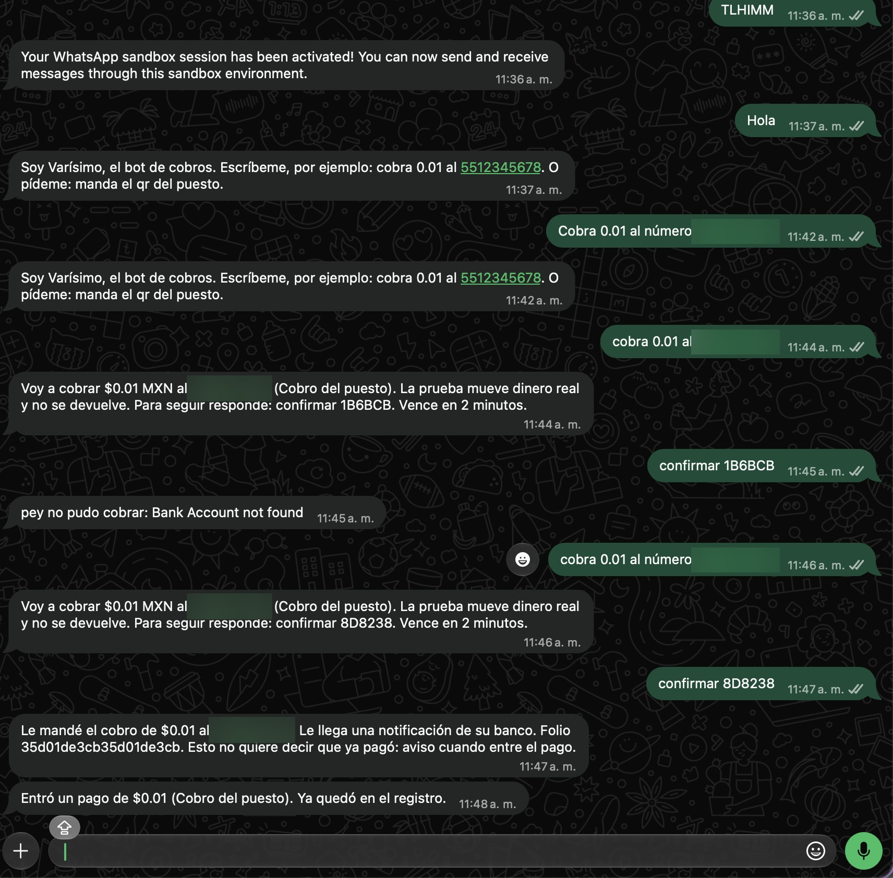
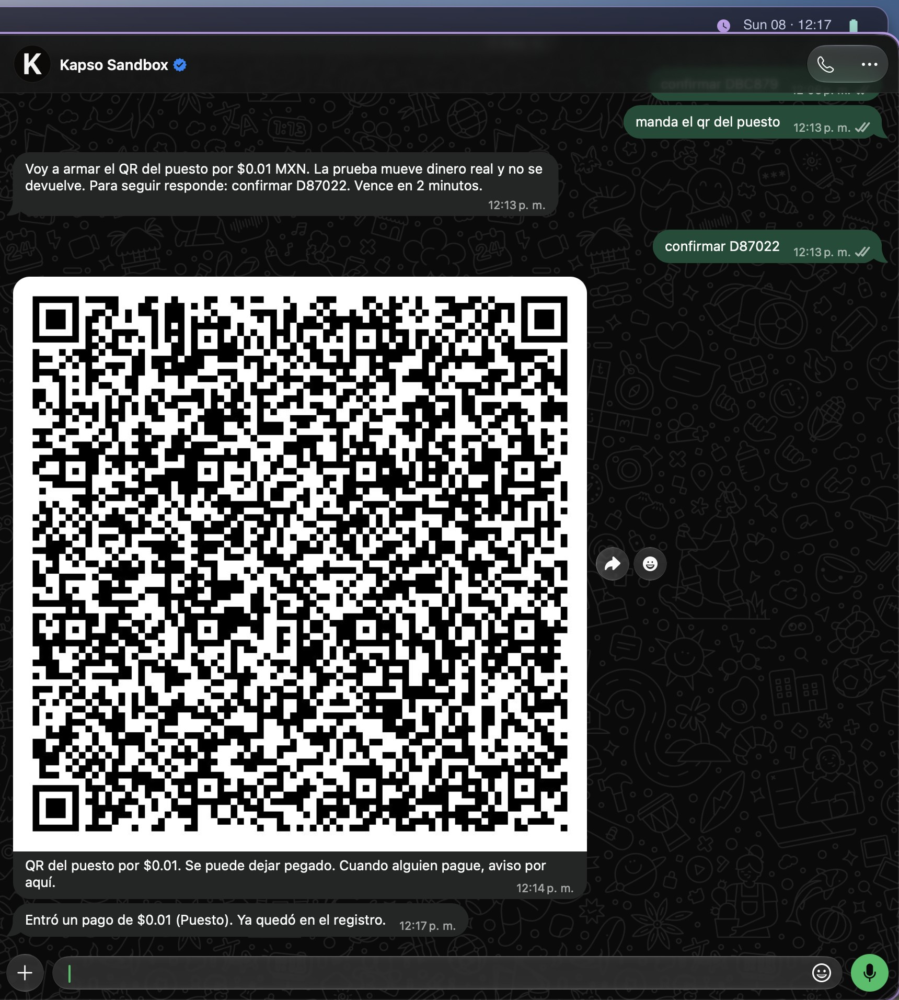
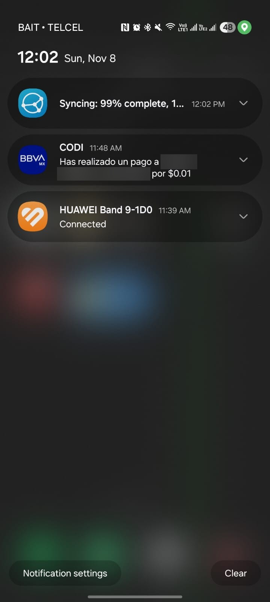

¿Ya entró el pago?
Si el dueño no está, una llamada o una captura terminan siendo el comprobante.
Una capa de pagos para los puestos de tianguis y la economía de comunidad.
DevDay Exchange Community Hackathon · Ciudad de México · Noviembre de 2026
El problema
Cuando el cobro depende del efectivo, las llamadas y las fotos de tickets, seguir cada venta se vuelve trabajo extra.
Si el dueño no está, una llamada o una captura terminan siendo el comprobante.
Quien cobra puede preferir hablar o mandar un mensaje, sin aprender una pantalla nueva.
Reconstruir los pagos del día no debería depender de revisar conversaciones.
Contexto del producto: specs/00-plataforma.md · IDEA.md
La solución
El dueño usa WhatsApp. La persona que paga recibe una solicitud CoDi o escanea un QR desde su banco.
El dueño indica monto y concepto en el chat.
Revisa el cobro y confirma antes de enviarlo.
pey genera el push de CoDi o un QR con monto fijo.
Cuando pey confirma el pago, el bot lo registra y avisa.
Voz y foto de ticket están definidas como entradas al mismo flujo. Su validación en vivo es posterior al corte demostrado por texto.
Flujo: specs/01-whatsapp-codi.md · specs/02-voz-multimodal.md · specs/roadmap.md
Demo documentada · 8 de noviembre de 2026
Push y QR de CoDi pedidos desde WhatsApp y pagados en la app del banco. El bot avisó solo.



Alcance de la demo: un puesto y un dueño en el sandbox de WhatsApp. Push probado a las 11:47 y QR a las 12:17. Video: youtu.be/Z2V4W_uf4ns · Pruébalo: varisimo.vercel.app
Evidencia: docs/entrega.md en github.com/G10hdz/codi-informal.
La plataforma
Texto por WhatsApp, solicitud CoDi por push y aviso cuando entra el pago.
Varios comercios, cada uno con su cuenta y registro. Página del puesto y acceso temporal a su libreta.
Tandas sin un bote central, compras colectivas y puntos comunitarios sobre la misma capa de CoDi.
Varísimo: cobrar donde ya conversas y saber cuándo entró el pago.
La visión no implica funciones desplegadas. El registro de pagos no es un score de crédito.
Alcance posterior: specs/04-comunidad.md · specs/05-multitenant.md · specs/06-front.md